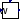
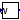
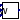

Turbine and its governor (the mathematical models are taken from PSAT)
Extends from Modelica.Icons.Package (Icon for standard packages).
| Name | Description |
|---|---|
| TG Type I | |
|  TGTypeII | TG Type II |
|  TGTypeIII | Hydro Turbine (Linear model) and Governor (Standard model)- control scheme Type 3 |
| TGTypeIV | Hydro Turbine (Linear model) and Governor (Standard model with PI controller)- control scheme Type 4 |
|  TGTypeV | Hydro Turbine (Nonlinear model) and Governor (PI controller combined with servomotor)- control scheme Type 5 |
| TGTypeVI | Hydro Turbine (Nonlinear model) and Governor (PID controller combined with servomotor)- control scheme Type 6 |
 OpenIPSL.Electrical.Controls.PSAT.TG.TGTypeI
OpenIPSL.Electrical.Controls.PSAT.TG.TGTypeITG Type I
| Name | Description |
|---|---|
| wref | Speed reference [1] |
| pref | Active power reference [1] |
| R | Droop [1] |
| pmax | Maximum turbine output [1] |
| pmin | Minimum turbine output [1] |
| Ts | Governor time constant [s] |
| Tc | Servo time constant [s] |
| T3 | Transient gain time constant [s] |
| T4 | Power fraction time constant [s] |
| T5 | Reheat time constant [s] |
| Name | Description |
|---|---|
| w | Rotor speed [pu] |
| pm | Mechanical power [pu] |
TG Type II
| Name | Description |
|---|---|
| wref | Reference speed [1] |
| R | Droop [1] |
| pmax0 | Maximum turbine output [1] |
| pmin0 | Minimum turbine output [1] |
| Ts | Governor Time constant [s] |
| T3 | Transient gain time constant [s] |
| Sn | Nominal power [V.A] |
| Power flow data | |
| S_b | System base power [V.A] |
| Name | Description |
|---|---|
| pm0 | Initial mechanical power [pu] |
| pm | Mechanical power [pu] |
| w | Rotor speed [pu] |
Hydro Turbine (Linear model) and Governor (Standard model)- control scheme Type 3
| Name | Description |
|---|---|
| wref | Reference speed [1] |
| Tg | Pilot valve droop [1] |
| gmax | Maximum gate opening [1] |
| gmin | Minimum gate opening [1] |
| vmax | Maximum gate opening rate [1] |
| vmin | Minimum gate opening rate [1] |
| Tp | Pilot valve time constant [s] |
| Tr | Dashpot time constant [s] |
| delta | Transient speed droop [pu/pu] |
| sigma | Permanent speed droop [pu/pu] |
| Tw | Water starting time [s] |
| a11 | Deriv. of flow rate vs. turbine head |
| a13 | Deriv. of flow rate vs. gate position |
| a21 | Deriv. of torque vs. turbine head |
| a23 | Deriv. of torque vs. gate position |
| int3 | |
| Power flow data | |
| P_0 | Active power [1] |
| Name | Description |
|---|---|
| w | Rotor speed [pu] |
| pm | Mechanical power [pu] |
Hydro Turbine (Linear model) and Governor (Standard model with PI controller)- control scheme Type 4
| Name | Description |
|---|---|
| wref | Reference speed [1] |
| Tg | Pilot valve droop [1] |
| gmax | Maximum gate opening [1] |
| gmin | Minimum gate opening [1] |
| vmax | Maxmimum gate opening rate [1] |
| vmin | Maximum gate opening rate [1] |
| Tp | Pilot valve time constant [s] |
| Tr | Dashpot time constant [s] |
| sigma | Permanent speed droop [pu/pu] |
| delta | Transient speed droop [pu/pu] |
| Tw | Water starting time [s] |
| a11 | Deriv. of flow rate vs. turbine head |
| a13 | Deriv. of flow rate vs. gate position |
| a21 | Deriv. of torque vs. turbine head |
| a23 | Deriv. of torque vs. gate position |
| Kp | Proportional droop |
| Ki | Integral droop |
| Pref |
| Name | Description |
|---|---|
| w | Rotor speed [pu] |
| Pm | Mechanical power [pu] |
Hydro Turbine (Nonlinear model) and Governor (PI controller combined with servomotor)- control scheme Type 5
| Name | Description |
|---|---|
| Tg | Servomotor droop [1] |
| gmax | Maximum gate opening [1] |
| gmin | Minimum gate opening [1] |
| vmax | Maximum gate opening rate [1] |
| vmin | Minimum gate opening rate [1] |
| Tp | Pilot valve time constant [s] |
| Tw | Water starting time [s] |
| Kp | Proportional droop [pu/pu] |
| Ki | Integral droop [pu/pu] |
| sigma | Permanent speed droop [pu/pu] |
| Pref | [1] |
| Name | Description |
|---|---|
| w | Rotor speed [pu] |
| Pm | Power Pm [pu] |
| pref | Reference power [pu] |
| wref | Reference rotor speed [pu] |
Hydro Turbine (Nonlinear model) and Governor (PID controller combined with servomotor)- control scheme Type 6
| Name | Description |
|---|---|
| gmax | Maximum gate opening [1] |
| gmin | Minimum gate opening [1] |
| vmax | Maximum gate opening rate [1] |
| vmin | Minimum gate opening rate [1] |
| Ta | Pilot valve time constant [s] |
| Tw | Water starting time [s] |
| beta | Transient speed droop [pu/pu] |
| Kp | Proportional droop [pu/pu] |
| Ki | Integral droop [1/s] |
| Kd | Derivative droop [s] |
| Td | Derivative droop time constant [s] |
| Rp | Permanent droop [pu/pu] |
| Ka | Pilot valve gain [pu/pu] |
| dref | [1] |
| po | [1] |
| Name | Description |
|---|---|
| Pm | Mechanical power [pu] |
| pe | Active power [pu] |
| pref | Active power reference [pu] |
| wref | Rotor speed reference [pu] |
| we | Rotor speed [pu] |